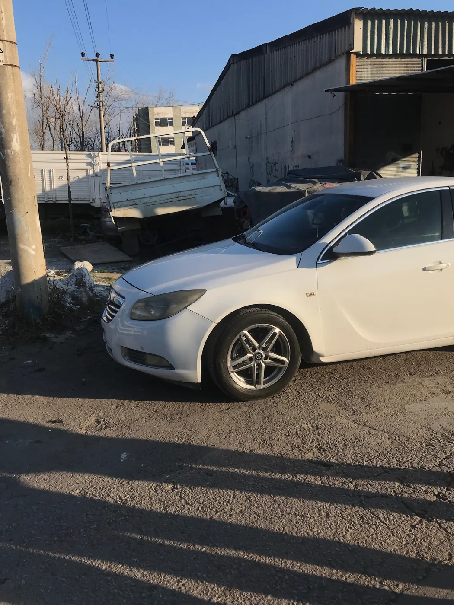

Oto kaporta onarımı
Aracınızın kaporta hasarı için atölyemizle görüşün. Yapılacak işlemleri aracın durumuna göre birlikte değerlendirelim.
MERMERLİ · MENEMEN · İZMİR
Aracınız için yeni bir başlangıç.
Albaş Oto Kaporta ile hasardan onarıma.

01 / HİZMETLERİMİZ
Aracınızın kaporta hasarı için atölyemizle görüşün. Yapılacak işlemleri aracın durumuna göre birlikte değerlendirelim.
Kaporta, tampon ve gövde hasarıyla ilgili bilgi almak için bizi arayın veya aracınızın fotoğraflarını WhatsApp üzerinden paylaşın.
İşlem kapsamı, uygunluk ve süre hakkında doğrudan atölyemizden bilgi alın. Fiyatlandırma, hasarın incelenmesiyle netleşir.
HASARDAN ONARIMA
Gerçek araçlar. Gerçek çalışmalar.
Her karede onarımın bir başka aşaması.
Hasarlı ön bölümden yenilenen görünüme.
Kaza sonrası görünüm ve atölyedeki sonraki aşama.
İkinci kare, aracın onarım sürecini göstermektedir.
02 / ÇALIŞMALARIMIZ
Atölyeden ve onarım sürecinden
gerçek fotoğraflar.
03 / KONUM & İLETİŞİM
Aracınızın durumu hakkında konuşmak ya da atölyemize gelmeden bilgi almak için bize ulaşın.
0545 550 12 14 WhatsApp’tan yazınPazartesi – Cumartesi
08.30 – 18.30
Pazar kapalı
MERAK ETTİKLERİNİZ
Menemen’in Mermerli Mahallesi’nde, 1406. Sokak No:20 adresindeyiz. Konum bölümündeki yol tarifi düğmesiyle Google Haritalar’dan rota oluşturabilirsiniz.
Hasarın kapsamına ve gerekli işlemlere göre değişir. 0545 550 12 14 numarasını arayarak veya WhatsApp’tan fotoğraf paylaşarak ilk bilgi alabilirsiniz. Kesin değerlendirme için aracın incelenmesi gerekir.
Pazartesiden cumartesiye 08.30–18.30 saatleri arasında açığız. Pazar günleri kapalıyız. Resmî tatillerde gelmeden önce telefonla bilgi alabilirsiniz.